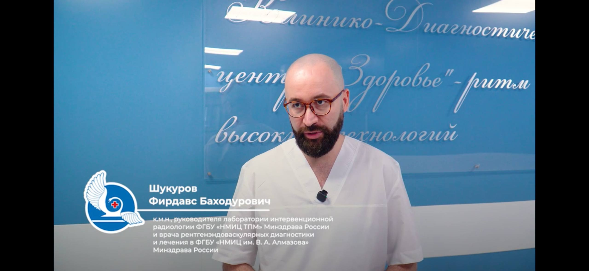
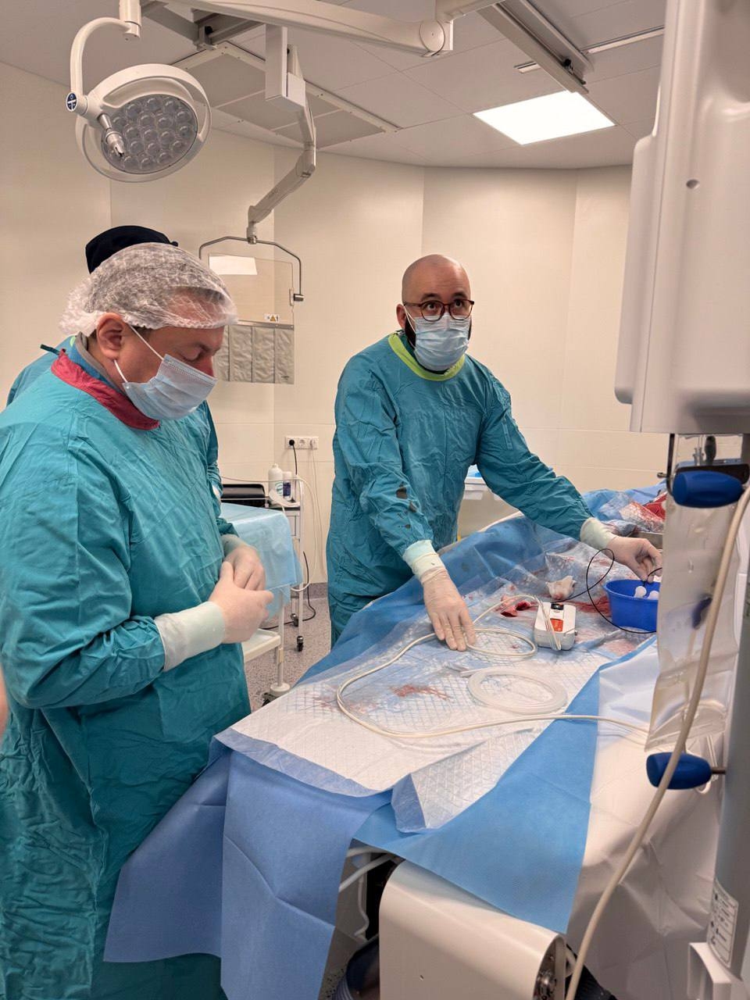
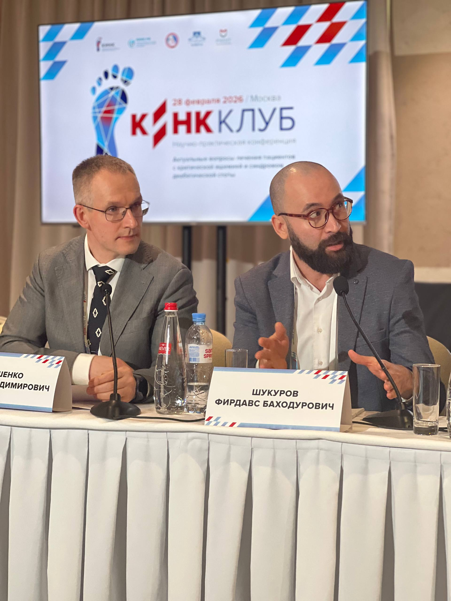
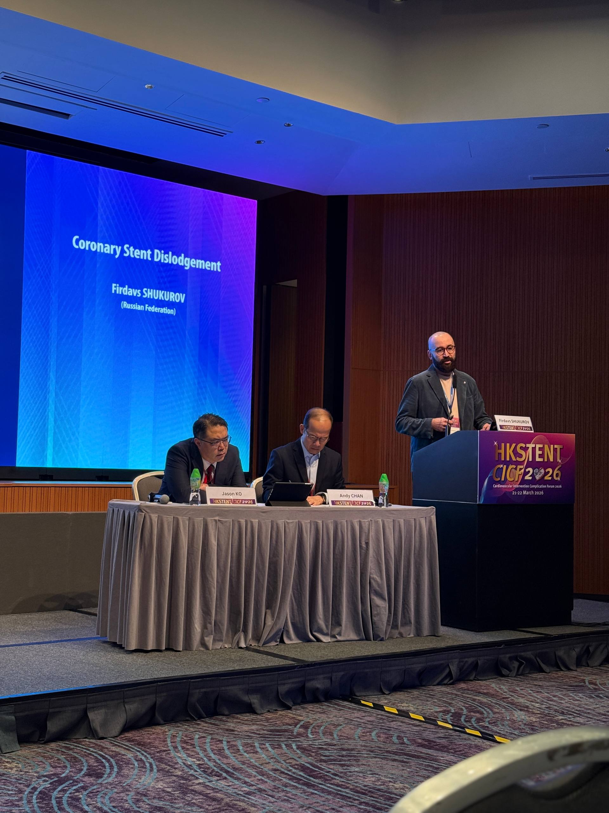
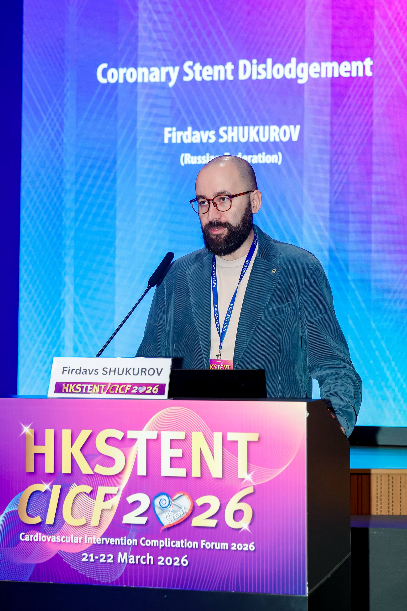

О враче
Я занимаюсь малоинвазивным лечением заболеваний сердца и сосудов более 13 лет. Возглавляю лабораторию интервенционной радиологии НМИЦ терапии и профилактической медицины Минздрава России. Моя специализация — сложные коронарные и периферические вмешательства, стентирование сонных артерий, транскатетерная имплантация аортального клапана (TAVI), применение внутрисосудистой визуализации — ВСУЗИ и ОКТ, а также современная безстентовая стратегия реваскуляризации миокарда. В клинической работе для меня особенно важны точная диагностика, индивидуальный выбор метода лечения и безопасность пациента. В сложных случаях я использую современные технологии модификации атеросклеротической бляшки и визуализации, позволяющие оценить сосуд изнутри, правильно спланировать вмешательство и проконтролировать его результат.


О враче
Более 13 лет я помогаю пациентам с заболеваниями сердца и сосудов. Сегодня я возглавляю лабораторию интервенционной радиологии НМИЦ терапии и профилактической медицины Минздрава России. Я выполняю малоинвазивные операции на коронарных, сонных и периферических артериях, а также транскатетерную имплантацию аортального клапана (TAVI) и эндоваскулярное протезирование аорты. В тех случаях, когда это безопасно и обоснованно, применяю современные стратегии лечения без установки постоянного стента. Значительную часть моей практики составляют сложные и нестандартные клинические случаи. Ко мне обращаются пациенты и направляют коллеги из разных регионов России, когда требуется дополнительная экспертная оценка, выбор оптимальной тактики или проведение технически сложного эндоваскулярного вмешательства. Для меня важно не просто выполнить операцию, а подобрать решение, которое лучше всего подходит конкретному пациенту. Поэтому в сложных случаях я использую внутрисосудистое УЗИ, оптическую когерентную томографию и современные методы подготовки кальцинированных и окклюзированных сосудов. Эти технологии позволяют увидеть артерию изнутри, точнее определить характер поражения, правильно спланировать вмешательство и сразу оценить его результат. Моя цель — сделать лечение максимально точным, безопасным и эффективным, сохранить качество жизни пациента и снизить вероятность повторных вмешательств.
Профессиональная и общественная деятельность
- Руководитель лаборатории интервенционной радиологии НМИЦ ТПМ Минздрава России
- Кандидат медицинских наук
- Член правления Российского общества рентгенэндоваскулярных хирургов
- Член Совета по интервенционной кардиологии Asian Heart Society
- Приглашенный Член Hong Kong Society of Transcatheter ENdo-cardiovascular Therapeutics
- Член European Society of Cardiology
- Член Российского кардиологического общества
- Приглашённый эксперт и преподаватель российских и международных образовательных программ


Профессиональный путь
Фирдавс Баходурович Шукуров — врач по рентгенэндоваскулярным диагностике и лечению, кандидат медицинских наук, руководитель лаборатории интервенционной радиологии НМИЦ терапии и профилактической медицины Минздрава России.
После окончания Волгоградского государственного медицинского университета прошёл подготовку по общей хирургии, а затем клиническую ординатуру по рентгенэндоваскулярным диагностике и лечению на базе Российского научного центра хирургии имени академика Б. В. Петровского.
Совершенствовал профессиональные навыки в ведущих клиниках России, Польши, Нидерландов, Германии, Ирландии, Малайзии, Японии и других стран.
Специализируется на сложных коронарных и периферических вмешательствах, каротидном стентировании, TAVI и применении внутрисосудистой визуализации. Регулярно проводит образовательные программы и мастер-классы для врачей, выступает на российских и международных конференциях, участвует в научных исследованиях и разработке профессиональных документов.
Профессиональные награды
Первое место в рейтинге малоинвазивных хирургов Москвы по версии премии «ПроДокторов»
Лауреат конкурса клинических случаев TCT Russia
Награды за лучшие научные доклады на российских конференциях
Награда за лучший доклад на HKSTENT CICF 2025 (Гонконг, КНР)
Почётная грамота Министерства здравоохранения Республики Таджикистан
Приглашённый эксперт российских и международных конгрессов
Член правления Российского общества рентгенэндоваскулярных хирургов и интервенционных радиологов
Член Совета по интервенционной кардиологии Asian Heart Society
Чем я могу помочь?

- Коронарография
- Ангиопластика и стентирование коронарных артерий
- Лечение сложных и кальцинированных поражений
- Реканализация хронических окклюзий
- Закрытие коронаро-легочных фистул
- Внутрисосудистое УЗИ и оптическая когерентная томография
- Транскатетерная имплантация аортального клапана — TAVI
- Лечение сужения сонных артерий: ангиопластика и стентирование для профилактики инсульта
- Лечение атеросклероза сосудов ног: баллонная ангиопластика и стентирование артерий нижних конечностей
- Восстановление кровотока при закупорке артерий ног: реканализация сложных и протяжённых окклюзий
- Ангиопластика и стентирование подвздошных артерий
- Эндоваскулярное лечение аневризмы брюшной аорты
- Лечение критической ишемии нижних конечностей и синдрома диабетической стопы
- Закрытие артерио-венозных фистул
- Эмболизации артерий
- Повторные вмешательства при рестенозе или повторной закупорке ранее оперированных артерий
- Разбор результатов коронарографии, КТ и ангиографии
- Второе экспертное мнение
- Определение оптимальной тактики лечения
- Онлайн-консультация для пациентов из других регионов


Отзывы клиентов